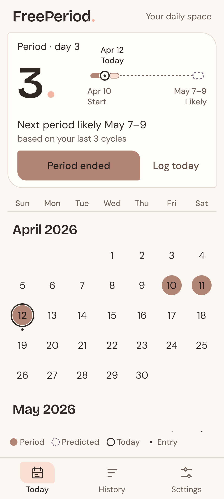
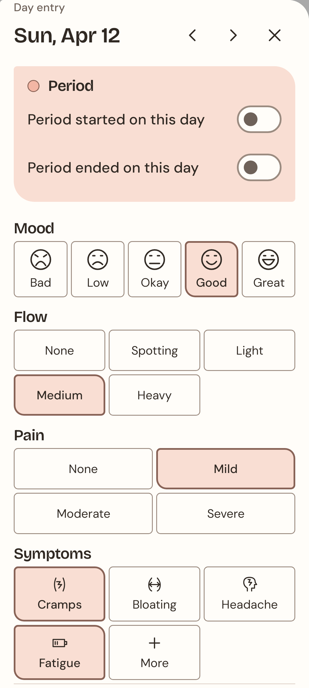
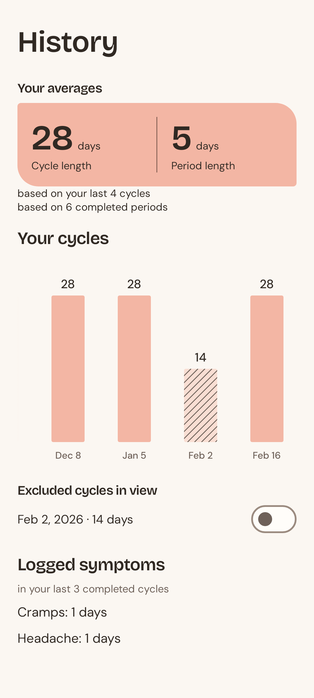
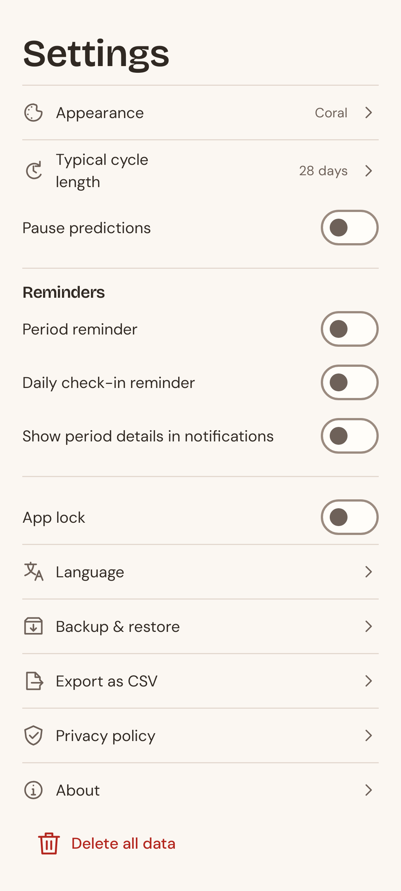
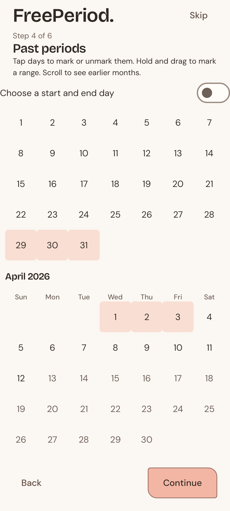

FreePeriod.
Your cycle,
at a glance.
Recorded days and calendar estimates.

Recorded days and calendar estimates.
Log a start or end in a few taps.

Mood, symptoms and notes. As much as you want.

Explore your cycle history and recorded symptoms.

Appearance, reminders and optional app lock.

Add past periods, or skip ahead.
